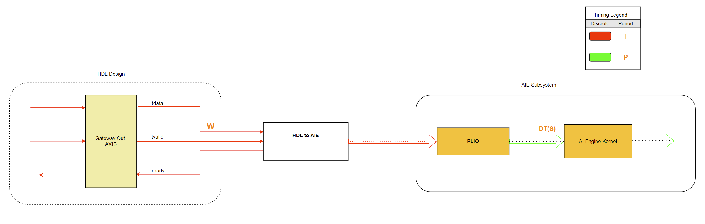

Connecting AI Engine blocks with HDL blocks
In Vitis Model Composer, simulation of the AI Engine blocks is untimed while the simulation of HDL blocks is timed (cycle accurate).
If you are simulating a heterogeneous system with both PL (modeled with HDL blocks) and AI Engine, you need to use “AIE to HDL” and “HDL to AIE” blocks to properly
manage the sampling times across the two domains. This Quick Guide explains how to set these two blocks properly and what to be aware of.
Setting the AIE to HDL block
The image below depicts the components that are needed to connect an AI Engine subsystem to an HDL desgin. In setting this connection, we should keep few input design criteria in mind and set the parameters of the blocks accordingly. These input design criteria are (refer to the image below):
- W, the bit width of the tdata signal in the programmable logic.
- T, This sample time determines the target clock rate for which the HDL design will be clocked in hardware. For single clock designs, this will be the sample time set in the Gateway In AXIS block.
- ii, As mentioned earlier, simulation in HDL domain is cycle accurate. An HDL design may not be ready to accept a new sample at every cycle (the tready signal from the HDL design will be set to zero when the HDL design cannot accept new samples). This is referred as the initilization interval (ii) of the HDL design. For example, if an HDL design accepts a new sample every 10 cycles, the design would have an initiation interval of 10. A design that can accept a new sample at every clock cycle has an initiation interval of one.
- S, Number of output samples of the AI Engine kernel.
- DT, Output data type of the AI Engine kernel.
Let's set P to be the period of the AI Engine subsystem. Note that all the input and output signals of the AI Engine subsystem must have the same period.
Also note that the PLIO block is a pass through block and only impacts code generation.

Keeping the above five input design criteria in mind, we can set the parameters of the blocks accordingly as described below:
Step 1 Set the PLIO bit width in the PLIO block
Set the PLIO bit width to W.
Step 2 Set parameters of the AIE to HDL block
Output Data Type
Set the Output Data Type such that the output bit width is W.
- If W is larger than the input bit width, the output should be unsigned.
- If W is eqaul to the input bit width, the output should have the same signedness of the input.
- Input bit width to the block cannot be larger than W.
Output Sample Time
Set the Ouptut Sample Time to Inherit: Same as tready (this is equivalent of setting this to T).
Signal Period into the block
If the input rate into the block is larger than the output rate, eventually the internal buffers of the block will overflow and the simulation will stop. As such, the input period P should meet the following equation:
Step 3 Set parameters of the Gateway In, AXIS block
- Set Output data type to W.
- Set Sample Time to T.
Setting the HDL to AIE block
The image below depicts the components that are needed to connect an HDL design to an AI Engine subsystem. In setting this connection, we should keep few input design criteria in mind and set the parameters of the blocks accordingly. These input design criteria are:
- The bit width of the tdata signal line (W). This is the bit width of the data in programmable logic.
- HDL design sample time (T). This sample time determines the target clock rate for which the HDL design will be clocked in hardware.
- Input data type to the AI Engine kernel block (DT). This is determined by the AI Engine kernel.
- Number of samples in the input to the AI Engine kernel block (S). For an AI Engine kernel with a window input type, this is typically the size of the input window. For an AI Engine kernel with a stream input, this is typically the number of samples the AI Engine kernel consumes at every invocation.
- The period of all the input and output signals going into or out of the AI Engine subsystem (P). All the input and output signals of the AI Engine subsystem must have the same period.

Knowing the five design criteria above we can set the parameters of the blocks accordingly as described below:
Step 1 Set the PLIO bit width in the PLIO block
Set the PLIO bit width to W.
Step 2 Set parameters of the HDL to AIE block
- Set Output Data Type to DT.
- Set Output frame size to S.
- Set Output Sample Time to T x (bit width of DT)/(W) if this input is driving the AI Engine Subsystem period or to P/S if the period of the AI Engine subsystem (P) is determined by another input to AI Engine subsystem.
Step 3 Set the Gateway Out AXIS block
Set the Sample Period parameter to the same value as in the corresponding "Gateway In, AXI Stream" block.
Examples
In this GitHub repository, you can find several examples in which the AIE to HDL and HDL to AIE blocks are being used:
Copyright 2020 Xilinx
Licensed under the Apache License, Version 2.0 (the "License");
you may not use this file except in compliance with the License.
You may obtain a copy of the License at
http://www.apache.org/licenses/LICENSE-2.0
Unless required by applicable law or agreed to in writing, software
distributed under the License is distributed on an "AS IS" BASIS,
WITHOUT WARRANTIES OR CONDITIONS OF ANY KIND, either express or implied.
See the License for the specific language governing permissions and
limitations under the License.